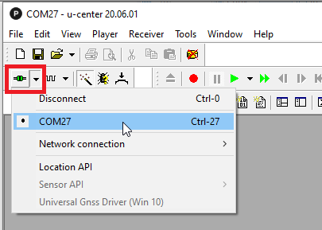
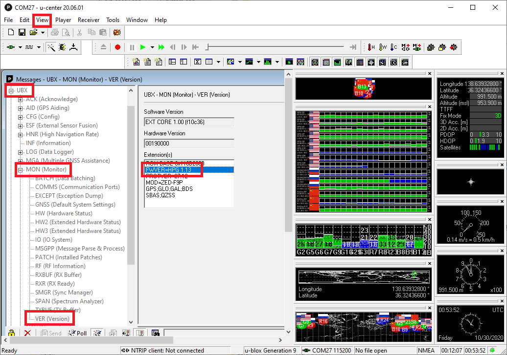

U-Blox F9P Firmware Update¶
The U-Blox F9 GPS is an L1/L2 RTK GPS that can provide high accuracy positioning and can also be used for GPS-for-Yaw. This documents how to upgrade the firmware on the GPS.
Firmware Upgrade Procedure¶
Download u-center from u-blox.com and install on your PC (Windows only)
Open the u-Blox ZED-F9P website
Scroll down and click on the “Documentation & resources” button
Scroll down to the “Firmware Update” section and download the latest firmware (“ZED-F9P HPG 1.13 firmware” as of Oct 2020)
Connect the GPS to your PC using a USB cable
Open u-center, select the COM port and connect
Check the GPS’s current firmware version by selecting View, Messages View, UBX, MON, VER
If the version is lower than the latest (especially if lower than 1.13) then upgrade the firmware
Select Tools, Firmware Update
The Firmware image field should be the .bin file downloaded above
Check the “Use this baudrate for update” checkbox and select 115200 from the drop-down
Ensure the other checkboxes are as shown below
Push the green GO button on the bottom left
“Firmware Update SUCCESS” should be displayed if the update was successful
{kind=link}
{kind=link}
{kind=link}
Configure Satellite Constellations¶
ArduPilot does not automatically configure the F9’s enabled constellations so this should be set manually using u-center as shown below
{kind=link}